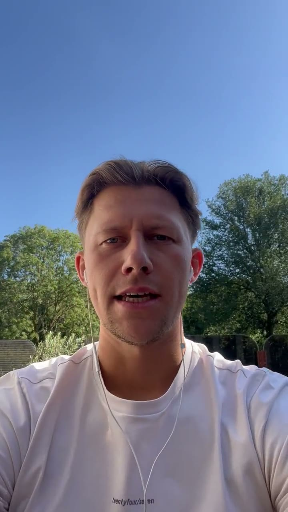
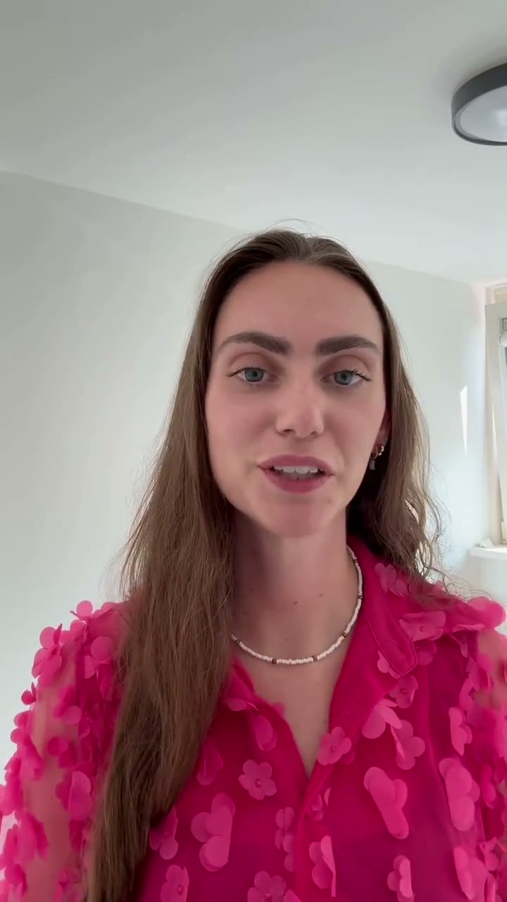

"Kan ik dit wel combineren naast mijn start-up?"

Resultaten verschillen per persoon en zijn niet gegarandeerd.
Iets voor jezelf opbouwen naast je baan lijkt ingewikkeld. Met een duidelijk plan en iemand die persoonlijk met je meekijkt, valt het reuze mee.
Gratis en vrijblijvend. Je zit nergens aan vast.
Hey, komt dit bekend voor?
Dat ligt niet per se aan jou: je hebt alleen nog niet de aandacht gekregen die je echt nodig hebt, en het heldere stappenplan om dit keer te zien hoe het wél werkt.
Herken je dit? Precies daarmee helpen wij jou: een duidelijk plan en iemand die persoonlijk met je meekijkt, tot het werkt.
Wat mag je verwachten?
Persoonlijke begeleiding staat bij ons voorop. En even helder: appointment setting is geen telefonische verkoop en geen klantenservice, je voert chatgesprekken met mensen die al interesse hebben.
We begeleiden je persoonlijk, stap voor stap. Persoonlijke aandacht staat bij ons voorop, dus je kunt altijd je vragen stellen.
Iedereen heeft zijn eigen bijsturing nodig. Daarom maken we een persoonlijk plan, en voeren we het samen uit.
We doen dit werk zelf elke dag en zitten bovenop de laatste ontwikkelingen. De beste performers blijven up-to-date, dus jij ook.
Mensen die elkaar alleen maar beter willen zien worden. Je staat er nooit alleen voor.
Je bouwt elke dag aan een online inkomen dat van jou is. Niet alleen voor nu, maar ook vrijheid voor later.
Twee keer per jaar komen we live samen: padellen, events, connecten. Zo breid je je netwerk uit en omring je jezelf met gelijkgestemden.
Het traject is volledig persoonlijk voor wat jij nodig hebt. Tijdens het kennismakingsgesprek lopen we het exacte plan samen door.
Ervaringen
Al deze mensen stonden waar jij nu staat. Hieronder lees je hun ervaringen.
"Kan ik dit wel combineren naast mijn start-up?"

Resultaten verschillen per persoon en zijn niet gegarandeerd.
"Kan ik dit combineren naast mijn 38-urige werkweek?"

Resultaten verschillen per persoon en zijn niet gegarandeerd.
"Ik had ook geen tijd, maar ik maakte tijd. Elk gaatje in de dag gebruikte ik."
Resultaten verschillen per persoon en zijn niet gegarandeerd.
"Ik was eerst sceptisch na een eerdere coaching zonder resultaat. Hier kreeg ik vertrouwen door de persoonlijke aanpak."
Resultaten verschillen per persoon en zijn niet gegarandeerd.
Waarom mensen ons vertrouwen
We beloven je geen gouden bergen, geen Lamborghini en geen snel rijk worden in twee maanden. Wel een eerlijk plan en mensen die echt met je meekijken.
Geen cursus waarbij je elkaar nooit ziet. Bij ons kom je elkaar echt tegen, op events en meetups door het jaar heen.
Bekijk de aftermovie →Pas als jij wint en op een goede opdracht zit waar ze tevreden met je zijn, winnen wij. Je komt in een groep die wint als jij wint.
Past het niet bij je? Dan zeggen we dat ook gewoon eerlijk. We willen alleen het beste voor jou.
Begon zelf zonder ervaring, naast een gewone baan, en bouwde vanuit daar zijn eigen online inkomen op. Managet nu teams en traint ze om beter te presteren.
Lees het verhaal van Calvin →Veelgestelde vragen
Je voert namens een ondernemer de eerste gesprekken met mensen die al interesse hebben, en je plant de afspraken in. Daar word je voor betaald. In het kennismakingsgesprek leggen we je rustig uit hoe dat werkt.
Nee. Het meeste contact gaat gewoon via chat, met mensen die zelf al interesse hebben getoond. Jij helpt ze verder en plant het gesprek in; het verkopen doet iemand anders.
Nee. De meeste mensen die wij begeleiden begonnen zonder enige ervaring, gewoon naast hun baan. Wat je nodig hebt is inzet en de bereidheid om te leren.
Reken op 5 tot 10 uur per week, in te delen wanneer het jou uitkomt. En je baan zeg je niet op: het traject is er juist op gebouwd dat je dit ernaast opbouwt, zodat je zekerheid gewoon blijft staan.
Eerlijk antwoord: dat verschilt per persoon en hangt af van je eigen inzet. In het gesprek kijken we naar jouw situatie en krijg je een realistische inschatting in plaats van een mooi gemiddelde.
Dat hangt af van waar je staat en wat je nodig hebt. Daarom starten we met een gesprek: daarin kijken we naar jouw situatie en bespreken we de investering open en eerlijk. Je weet precies waar je aan toe bent voordat je ergens ja op zegt.
Nee. Je krijgt geen inlog met een berg video's, je krijgt begeleiding. Elke week persoonlijk contact, tot het werkt.
Nee. We kijken samen naar jouw situatie en zijn eerlijk over of dit bij je past. Is het antwoord nee, dan zeggen we dat gewoon.
Benieuwd of dit bij jou past?
Beantwoord hieronder een paar korte vragen, dan kijken we samen naar jouw situatie. We nemen niet iedereen aan: we kijken eerlijk of het bij je past.